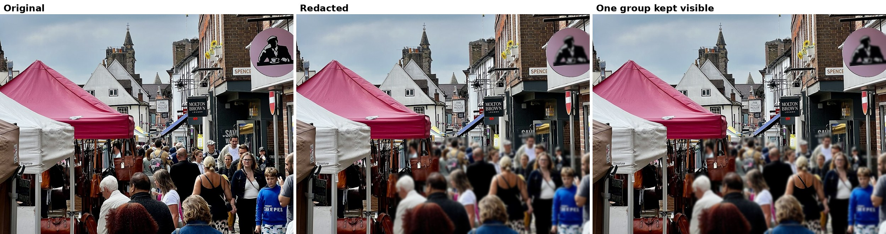
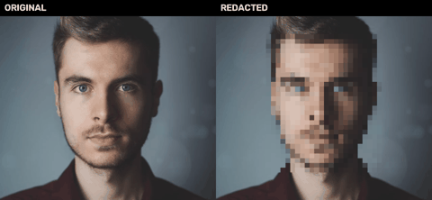
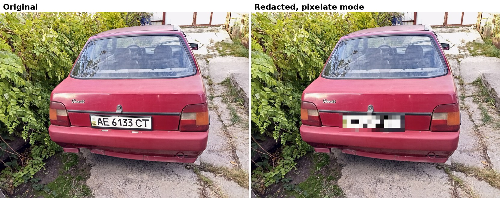
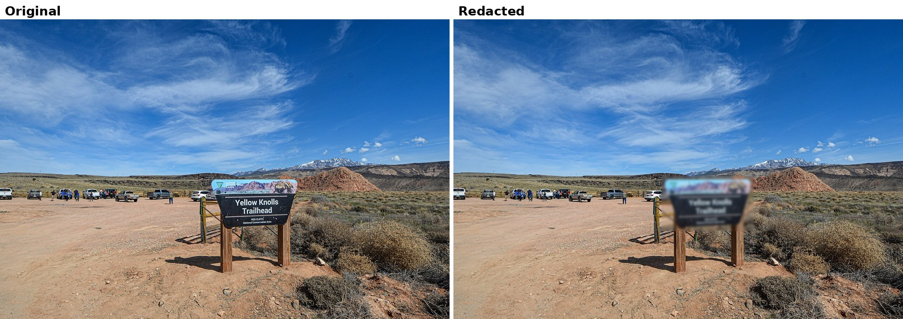
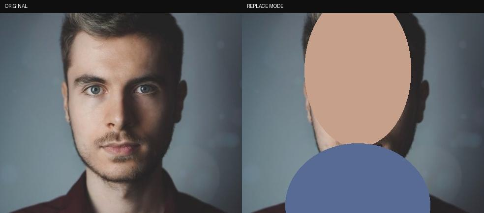
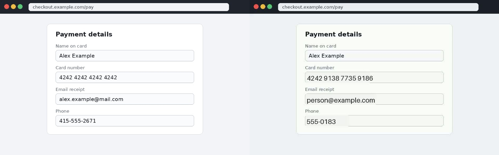

A crowd is not one face
One pass found 28 people and 14 faces in this market photo. The third panel shows the review flow at work. Pick one tracked group, keep it visible, and leave everyone else covered.
Open source video and photo redaction
Drop in a clip or a photo, name what to hide, and get a share-safe copy out. Open Redactor tracks people, faces, documents, numbers, codes, and places across frames, then blurs, pixelates, or replaces them.
pip install open-redactor

Real public photos, real detections, and the exact kind of scenes people actually share. Every scene below is in the public showcase pack with originals, outputs, and attribution.

One pass found 28 people and 14 faces in this market photo. The third panel shows the review flow at work. Pick one tracked group, keep it visible, and leave everyone else covered.

A large plate can stay readable under gentle blur. Pixelate mode makes the cover obvious and final.

Street signs, trailheads, house numbers, plates, and mailboxes can give away where a photo was taken. The location preset covers them together.
One command can stack visual detection, document targets, printed text, codes, location clues, and voice treatment.
Prompt for a person, a face, or another object in plain words. Tracks are padded and carried through brief dropouts.
Passports, credit cards, driver licenses, ID cards, documents, and name badges with the documents preset.
OCR finds card numbers, Social Security numbers, phone numbers, and emails. Card numbers must pass the Luhn check before they count.
QR codes and barcodes can carry payment links, Wi-Fi passwords, and contact cards. Code regions get an opaque fill before any blur.
Signs, house numbers, mailboxes, and plates are often the detail that turns a nice photo into a map pin.
Keep the audio, mute it, or pitch shift it. And with the speech layer, a dictated phone number, card number, or email is found in the transcript and muted in place.
Choose the look that fits the share. Detection is cached, so changing the mode is a re-render, not another detection bill.
The clean default for family clips, work recordings, and photos where the scene should still feel natural.
The classic redaction look. Best for plates, screens, and large high contrast details that must not stay readable.
A generated stand-in takes the place of a face, plate, number, or printed secret. The same track keeps the same fake across the clip.

The face becomes a neutral synthetic avatar while the photo around it stays untouched.

The text layer caught the card number, email, and phone in a checkout form and swapped in format valid fakes.
A voice clip can give away a number no camera ever saw. This caller dictates a phone number out loud. Press play on both.
The waveform runs unbroken through the whole clip, number included.
The greeting and the closing words survive. The flat stretch in the middle is the number, gone. Re-transcribing this file finds no PII left.
One flag does it: open-redactor call.mp4 --speech-pii. Spoken numbers are verified with the same Luhn and issuing rules as printed ones before anything is muted.
Redaction fails quietly in most tools. Open Redactor is built to show its work before and after the render.
Render a short sample with a contact sheet before you commit to a full clip.
Shadow mode lists every element, its frames, and a severity grade. Passports and card numbers grade critical.
Any gap longer than the carry window is flagged NEEDS REVIEW in plain words.
Track keys from the report feed the keep and exclude flags, so exceptions stay visible in the record.
open-redactor doctor lists what is installed, what is missing, and the exact command that fixes each gap.
# Audit first. Nothing is changed. open-redactor clip.mp4 --shadow --preset documents --sensitive CRITICAL passport on 184 frames CRITICAL credit card number on 96 frames HIGH face on 240 frames # Then render with proof. open-redactor clip.mp4 --preset documents --sensitive cat clip.redacted.coverage.txt
The default backend uses the Meta Model API for SAM 3.1. A hosted backend can point at your own endpoint. Local mode keeps footage on your machine.
Best quality with no GPU to manage. Your media goes to the API with your key.
The same request shape pointed at a team server, a cloud GPU box, or your own deployment.
Grounding DINO plus SAM 2 on your hardware. This is the mode for footage that should never be uploaded.
Install the package, preview a clip, read the coverage line, then render the full copy.
pip install open-redactor open-redactor clip.mp4 --preview --preset family cat clip.redacted.coverage.txt open-redactor clip.mp4 --preset family